(DETR) End-to-End Object Detection with Transformers 리뷰
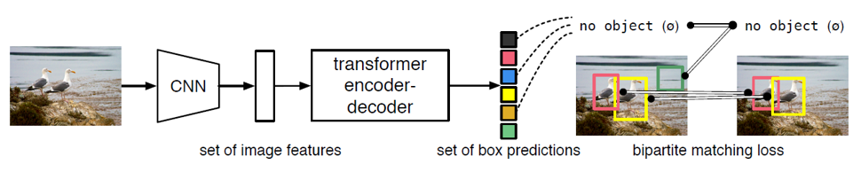
본 글은 Facebook AI에서 2020년 arxiv에 발표한 End-to-End Object Detection with Transformers (DETR) 논문에 대한 리뷰입니다. 리뷰를 읽기 전 Transformer가 익숙하지 않으신 분들은 Attention is All You Need 관련 리뷰를 보고 나서 읽으시는 것을 권장드립니다.
객체 탐지(Object detection)에 관한 연구는 인공지능 연구가 시작된 이래로 지속적으로 발전해왔습니다. Regional-CNN, Faster R-CNN, Single Shot Detector, YOLO 등 많은 방법론들이 제안되었으며 학습의 효율성과 성능은 점점 향상되고 있습니다. 객체 탐지 문제의 목표는 input 이미지에서 찾을 수 있는 모든 객체들에 대한 class와 bounding box 정보를 얻는 것입니다. 이는 단순히 이미지를 분류(classification)하는 문제에 비해 훨씬 더 복잡하기 때문에, 기존의 여러 방법론들에서는 전/후처리 과정을 추가하거나 customize된 모델 구조를 활용하는 방법으로 문제를 해결하였습니다.
본문에서 소개한 DETR은 Transformer 구조와 Bipartite matching 기법을 활용하여 기존의 방법론들과 달리 end-to-end로 결과를 도출하였습니다. 기존에 꼭 필요했던 non-maximum suppression(NMS)나 anchor generation 과정이 생략되어 간단하고 빠르게 결과를 얻을 수 있습니다. 또한 Faster R-CNN과 비교했을 때 뒤지지 않는 성능을 보여주었습니다. 그럼 DETR에 대해서 지금부터 파헤쳐 보겠습니다.
Set prediction with bipartite matching loss
DETR은 output으로 정해진 개수(N)의 객체에 대한 class와 bounding box를 도출합니다. 이 때 output의 개수(본문에서 N=100)는 일반적인 이미지에서 존재하는 객체의 개수보다 충분히 큰 값으로 사전에 설정해줍니다. Class 집합에는 사전에 정의한 class 외에 no-object class를 추가하여, output 중 객체가 없는 경우에 no-object class에 배정하도록 합니다.
이제 학습을 위해서 결과로 나온 N쌍의 class와 bounding box를 target의 class, bounding box와 비교하여 손실 함수를 계산해야 합니다. 이 때 N개의 output에 대한 (class, bounding box)가 각각 target의 어떤 (class, bounding box)와 매칭되어 손실 함수를 계산할 것인지 결정해야합니다. 이를 이분 매칭(bipartite matching)이라고 부릅니다. Grid search로 모든 경우에 대한 matching loss를 계산하여 비교하게 되면 총 O(n!*n) 의 complexity를 가지지만 본문에서는 Hungarian 알고리즘을 활용하여 complexity를 O(n3) 로 향상시켰습니다.
이렇게 이분 매칭을 활용하여 유일한 최적의 output-target 조합을 찾으면, output에 대한 loss를 계산하여 back-propagation에 활용할 수 있습니다. 만약 output을 도출하는 네트워크가 다른 추가적인 처리 모듈 없이 one-stage로 구성되어 있다면, end-to-end로 direct하게 객체 탐지 결과를 얻을 수 있습니다.
또한 하나의 target object에 대해 여러 output을 생성해버리는 near-duplicate prediction 문제도 이분 매칭을 활용하게 되면 결국 하나의 output-target 쌍으로 매칭이 되기 때문에, 학습 과정에서 어느 정도 해결된다고 할 수 있습니다. 이는 이후에 살펴볼 decoder 단의 attention layer와 함께 DETR이 NMS 모듈 없이도 잘 동작할 수 있는 근거가 됩니다.
DETR Architecture
DETR의 구조는 크게 CNN Backbone, Transformer(encoder-decoder), Feed-forward의 세 부분으로 나눌 수 있습니다.
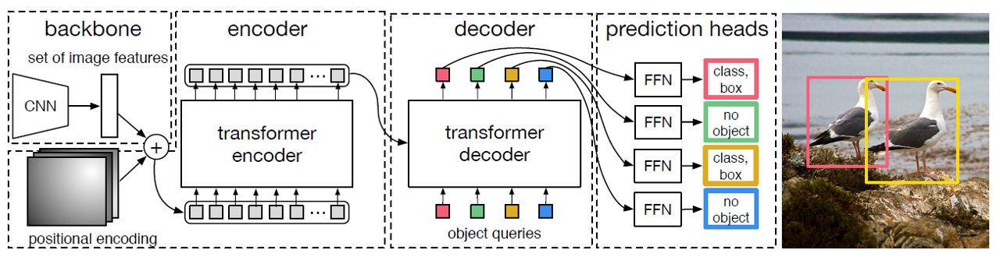
- CNN Backbone
Backbone 구조는 3-color channel image를 받아 feature extraction을 하는 CNN 구조를 사용했습니다. 본문에서는 ImageNet을 활용하여 학습한 ResNet50이나 ResNet101을 이용하였습니다. CNN backbone을 거쳐서 나온 feature map(본문에서는 channels=2048, height과 width는 input의 1/32)은 1x1 convolution 과정을 통해 channel 차원을 감소한 뒤에 형변환을 거쳐서 Transformer로 들어갔습니다.
Transformer는 input 사이의 순서를 고려하지 않고 병렬적으로 attention score를 연산합니다. 따라서 일반적으로 sequential 데이터를 넣어줄 때는 순서 정보를 포함한 positional encoding 벡터를 더해서 넣어주는데요, DETR에서도 Transformer encoder로 들어가기 전에 pixel들 사이의 순서 정보(여기서는 pixel의 위치 정보라고 할 수 있겠네요)를 더해주기 위하여 spatial positional encoding 벡터를 더해주었습니다. Positional encoding은 Vanilla Transformer에서 사용했던 1D sinosoidal encoding을 2D로 일반화하여 사용하였으며 ablation study 과정에서 sinosoidal 대신 linear layer을 학습한 learned positional encoding을 사용하기도 하였습니다.
- Transformer (Encoder-Decoder)
Transformer 구조는 2017년 발표된 Attention is All You Need 논문에서 제안된 것으로, sequential한 데이터 간의 연관성을 병렬적으로 파악하여 자연어 처리 및 음성 처리 등의 분야에서 활발히 활용되고 있습니다. DETR은 다차원 행렬의 형태를 띈 이미지를 sequential한 형태로 변경하여 Transformer에 넣어주면 pixel 간의 연관성 및 유사도(compatibility)를 거시적으로 파악할 수 있을 것이라는 관점에서 고안되었습니다.
Encoder input으로는 sequence의 pixel값을 embedding 벡터로 변환하여 positional encoding을 더해준 값을 사용하였습니다. Encoder는 Multi-head self-attention 메커니즘을 활용하여 전체 이미지 내에서 pixel들 사이의 관계 정보를 추출하였고, 이를 attention score에 반영하게끔 학습하였습니다. 실제로 학습된 encoder에서 어떤 input 이미지에 대한 encoder의 attention score를 시각화했을 때, 아래 그림과 같이 같은 객체 내에 포함되는 pixel들 사이의 attention score가 높은 경향을 보였습니다.
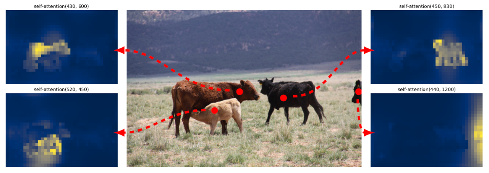
Decoder 부분도 Vanilla Transformer의 decoder 블럭과 같이 multi-head self-attention과 encoder-decoder attention을 활용하여 구현하였습니다. 다만 기존처럼 sequence output을 auto-regressive하게 하나씩 얻어내는 방식이 아니라 parallel하게 N개의 output을 한번에 얻는 방식을 활용하였습니다. 이것에 대해 조금 설명하자면 decoder가 해주는 multi-head self-attention 연산은 input의 순서와 무관하게 같은 결과를 도출하는 permutation-invariant한 연산입니다. 따라서 N개의 input이 서로 다른 객체 탐지 결과(class 및 bounding box)를 도출하려면 input 자체가 서로 다른 embedding 벡터로 구성되어야 합니다. DETR에서는 이 N개의 decoder input을 object query 라고 부릅니다. Object query 값은 positional encoding과 마찬가지로 1D sinosoidal encoding 벡터를 이용하거나 linear layer을 학습시켜서 나온 output 벡터를 이용하였습니다.
이러한 non-autoregressive한 decoder 구조는 autoregressive한 구조에 비해 inference에 대한 시간적-계산적 효율성이 높습니다. 기존의 Autoregressive한 decoding 과정은 각 과정마다 하나의 output만을 얻을 수 있기에 N=100인 경우 100번의 inference를 거쳐야 하나의 이미지에 대한 객체 탐색 결과를 얻을 수 있습니다. 반면에 DETR에서 활용한 구조는 100개의 output을 병렬적으로 decoding 할 수 있기 때문에 빠르고 효율적입니다.
Encoder의 역할이 이미지의 전체 pixel들 중 같은 객체의 pixel들 사이에 높은 attention score를 부여하여 객체의 존재 여부와 형태를 파악했다면, decoder의 기본적인 역할은 그 객체가 어떤 객체인지를 파악하는 데에 있습니다. 아래의 그림은 decoder의 attention score(encoder-decoder attention)를 시각화한 그림인데요, 탐지된 객체에서 class와 bounding box 정보를 추출해내기 위해 객체의 머리나 다리 같은 가장자리 부분에 대한 attention score가 크게 나타난 것을 확인할 수 있습니다.
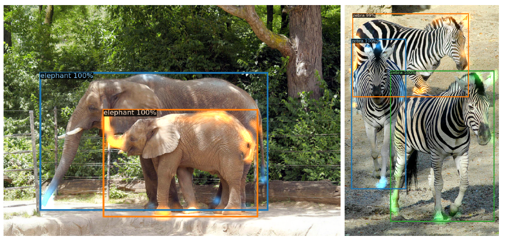
또한 decoder는 한 객체에 대해 생성된 여러 개의 중복된 prediction을 제거해주는 역할도 하고 있습니다. Decoder의 self-attention 메커니즘을 통해 모든 object query가 서로 pair-wise relation에 대한 연산을 하면서 같은 예측값을 제거하는 방향으로 학습이 되는 형태입니다.
이를 증명하기 위해 본문에서는 decoder의 output에 non-max suppression(NMS) 처리를 하여 기존의 output의 average precision(AP) 값을 비교해보았습니다. Input과 가까운 몇 단계의 decoder block에서는 NMS 연산을 통해 향상된 결과를 얻을 수 있었지만, decoder layer가 쌓이면 쌓일수록 그 정도가 줄어들다가 마지막 layer에서는 NMS가 서로 다른 object에 대한 prediction을 제거하여 오히려 성능을 떨어트렸습니다. 이는 decoder layer를 거치면 거칠수록 near-duplicate prediction들이 자연스럽게 제거되었고 결국 NMS 없이도 좋은 결과를 얻을 수 있었던 것으로 해석할 수 있습니다. 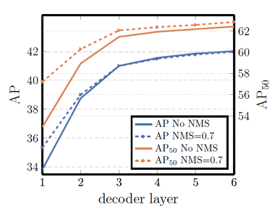
Decoder의 학습을 돕기 위해 각 decoder 블럭에 class와 bounding box를 예측하는 feed-forward 네트워크를 추가하여 loss를 계산하였습니다. Decoder에 연결된 feed-forward 네트워크는 서로 weight parameter를 공유하고, 계산한 loss function은 역전파를 통해 decoder의 학습 성능을 높히게 됩니다. 논문에서는 이를 auxiliary loss라고 부르며 F1/DICE loss를 사용하였다고 합니다.
- Feed-forward
Feed-forward 네트워크는 N개의 decoder output을 독립적인 input으로 받아서 각각의 class와 bounding box 값을 예측합니다. 네트워크는 3-layer의 perceptron과 ReLu activation function으로 구성되었습니다. Class output은 softmax layer을 통과하여 각 class에 대한 확률값을 나타내고, bounding box output은 이미지의 원래 크기에 따라 normalize된 box의 중심 좌표와 너비, 높이에 대한 값을 나타냅니다. Class의 결과로는 기존에 정의한 class 외에 no-object라는 class를 추가하여 예측된 영역(slot)에 객체가 없는 경우를 표현하였으며, 다른 몇몇 모델에서 사용하는 background class와 유사한 역할을 합니다.
Training
지금부터는 DETR의 학습에 대해서 설명하겠습니다.
- Dataset
DETR은 COCO 2017의 object detection 및 panoptic segmentation 데이터셋을 이용하여 학습하였습니다. 약 120000장과 5000장의 이미지를 학습과 검증에 활용하였습니다. 학습 데이터는 평균 7개, 최대 63개의 객체를 포함하고 있었습니다.
- Matching cost
DETR은 모델을 통해 예측한 100개의 output과 이미지에 실제로 존재하는 객체들을 매칭해서, 최적의 조합을 찾은 후에 손실 함수를 계산합니다. 이 때, 매칭에 사용되는 cost는 class와 bounding box의 유사도를 잘 나타낼 수 있는 값으로 설정해야 합니다. 본문에서는 class에 대한 확률값과 bounding box에 대한 L1 loss, IOU loss를 이용해 matching cost를 정의하였습니다. 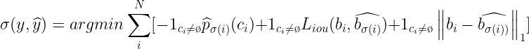 이후 Hungarian 알고리즘을 통해 최적의 cost 값을 가지는 output-target 조합을 정하고 나서 손실 함수를 계산하게 됩니다.
- Loss function
손실 함수는 matching cost와 비슷하게 class에 대한 negative log-likelihood와 bounding box에 대한 L1 loss, IOU loss를 1:5:2의 비율로 가중합하여 정의하였습니다. 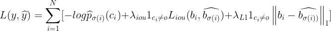 손실 함수로 IOU loss를 사용하는 이유는, DETR이 작은 객체 검출에 대한 성능이 부족하기 때문에 이를 보완하기 위해서입니다. DETR의 Transformer encoder는 모든 pixel에 대한 global relation을 파악하기 때문에 큰 객체에 대한 탐지 성능이 높습니다. 하지만 DETR은 CNN backbone에서 하나의 feature map만을 추출하여 객체 검출에 활용하기 때문에, Feature Pyramid Network(FPN)와 같이 여러 scale의 feature map을 추출하여 객체를 검출하는 밤식과 비교해서 작은 객체에 대한 탐지 성능이 떨어집니다. L1 loss 만을 이용하면, 작은 객체는 손실 함수에 작게 기여할 수밖에 없습니다. 하지만 IOU 값은 작은 객체든 큰 객체든 면적이 겹치는 비율에 따라 결정되기 때문에, IOU loss를 이용하면 작은 객체도 손실 함수에 크게 기여할 수 있게 됩니다.
손실 함수는 각 이미지가 포함하는 객체의 개수에 독립적인 값이어야 하기 때문에, 항상 마지막에 객체 개수로 나눠주어 normalize 하였습니다.
- 그 외 Details
Weight parameter의 초기값은 Xavier initialization을 활용하여 설정해주었고, Learning rate은 10-4를 이용하여 학습하다가 200 epoch가 지나면 10-5로 바꿔주었습니다.
최적화는 Adam W optimizer을 사용하였으며, 일반화를 위해 학습 과정에서 dropout 기법(p=0.1)을 사용하였습니다.
데이터 증강을 위해 random resize, random crop, random horizontal flip을 통한 scale augmentation를 진행하였습니다.
Baseline 모델은 16개의 V100 GPU로 3일 동안 300 epoch를 학습하였습니다. (학습 시간이 아주 길게 필요합니다.)
Result
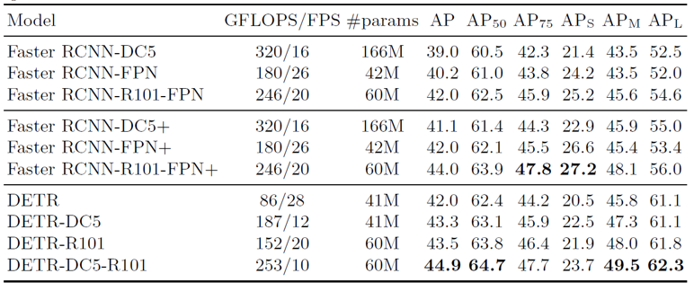
DETR은 Faster R-CNN과 비교했을 때 구조적으로 훨씬 간단하고 빠른 추론 속도를 보이면서 높은 AP score의 객체 탐지 결과를 도출하였습니다.
다만 앞서 말씀드렸듯 single-scale feature map으로부터 결과를 도출하기 때문에, 작은 객체에 대한 탐지 능력이 큰 객체에 비해 떨어지는 경향을 보였습니다. 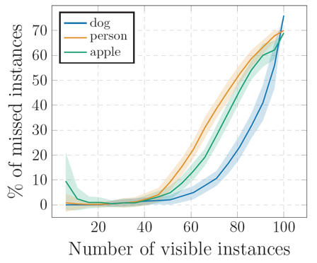 또한 60개 이상의 많은 객체를 포함한 이미지에 대해서는 잘 동작하지 못하는 모습을 보여주었습니다. 평균적으로 학습한 이미지들이 7개 정도의 객체를 가지고 있었기 때문에, 60개 이상의 객체를 가진 이미지는 out-of-distribution 데이터이고 그에 따라 네트워크가 잘 반응하지 못하는 것 같습니다.
Panoptic segmentation
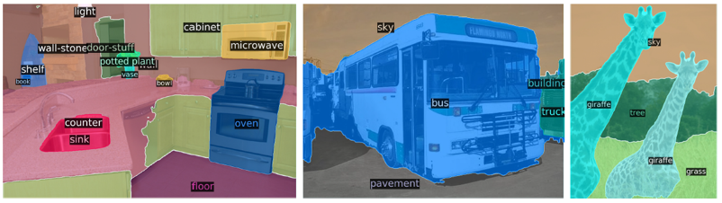 Panoptic segmentation이라는 개념은 semantic segmentation과 instance segmentation을 융합한 개념으로, 배경 관련 객체인 `stuff`와 배경이 아닌 객체인 `thing`을 instance 단위로 모두 구별해주는 segmentation입니다.
Faster R-CNN에 segmentation head를 추가하여 Mask R-CNN을 구현했듯, DETR의 decoder output에 head를 추가하여 panoptic segmentation 결과를 얻을 수 있습니다. Segmentation head의 구조는 아래와 같습니다. 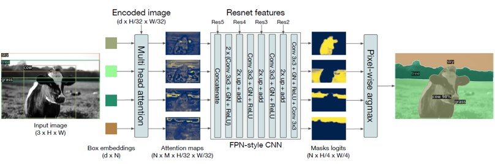 Decoder의 output으로 나온 각 객체들과 인코딩 된 원본 이미지를 multi-head attention 메커니즘에 통과시키면, 원본 이미지에서 각 객체와 연관성이 높은 pixel을 찾을 수 있습니다. 이렇게 나온 output을 FPN 형태의 CNN에 넣어주어 각 객체에 대한 mask image를 얻고, pixel별로 argmax 연산을 하여, 최종적으로 전체 이미지에 대한 segmentation map을 얻었습니다.
Summary
DETR은 이분 매칭(bipartite matching)을 통한 최적의 손실 함수 계산과 Transformer 구조를 통해 pixel 사이의 관계를 파악하여 객체 탐지 태스크를 end-to-end로 학습하였습니다. 기존의 Transformer와 달리 non-autoregressive하게 decoding하기 때문에 inference cost를 최소화할 수 있었습니다. 또한 decoder output에 몇 가지 layer를 추가하여 panoptic segmentation 태스크를 수행하는 등의 확장성도 보여주었습니다. 최근에 발표된 EfficientDet이나 DeTectORs 만큼의 성능을 보여주지는 못했지만, 복잡한 모듈이나 Custom layer 없이 간단하게 구현할 수 있고 end-to-end로 직접 결과를 얻을 수 있다는 점에서 큰 가치가 있는 논문이라고 생각합니다. 읽어주셔서 감사합니다 :)
참고 문헌 및 출처